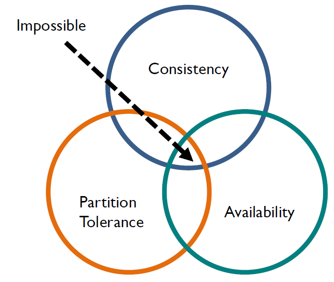

class: center, middle # IEMS 5780<br/>Building and Deploying Scalable<br/>Machine Learning Services ### Lecture 1 - Course Introduction #### Albert Au Yeung<br/>6th September, 2019 --- # Agenda ### Course Administration * Course details * Course schedule * Assessment Schemes * Policies and Rules ### Course Content Overview * Machine Learning * Scalable Network Applications --- # Course Instructors ### **Lecturer**: Albert Au Yeung * Email: cmauyeung@ie.cuhk.edu.hk * For lecture content, materials, details of assignments, reference materials, etc. ### **TA**: TBC * Email: TBC * Contact the TA if you need specific help when working on your assignments --- # About Me * BEng in IE, MPhil in CSE * PhD in Computer Science (University of Southampton, UK) * AI Technical Manager at Wisers AI Lab (https://www.wisers.ai) * Was machine learning engineer & researcher at NTT, ASTRI and Huawei * [https://www.linkedin.com/in/albert-au-yeung/](https://www.linkedin.com/in/albert-au-yeung/) --- # Lectures ### Venue & Time * Lee Shau Kee Architecture Building (ARC) **G03** * Thursday 7:00pm – 10:00pm * **Lecture dates (13 lectures)**: + Sep 6, 13, 20, 27 + Oct 4, 11, 18, 25 + Nov 1, 8, 15, 22 + Dec 13 (Final Examination) * Refer to the [course Website](http://iems5780.albertauyeung.com/) for the most up-to-date schedule of the course --- # Topics * This course will be divided roughly into two parts * **Part 1 - Machine Learning**: - Lecture 2: Machine learning basics - Lectures 3-4: Text classification - Lectures 5: Recommender Systems - Lecture 6: Computer Vision * **Part 2 - Network Applications**: - Lecture 7: Network Programming - Lectures 8-9: Concurrent Programming - Lecture 10: Web Applications - Lecture 11: Asynchronous Tasks and Message Queues - Lecture 12: Deploying Machine Learning Applications --- # Assessment Scheme ## IEMS 5780 * **10%** - Attendance (Lecture 2 to Lecture 12) * **60%** - Programming Assignments * **30%** - Final Examination (Written & Close books/notes) --- # Programming Assignments * A total of **4** programming assignments * All should be finished using the [Python programming language](https://www.python.org/) * Late submission will **NOT** be marked * Topics of the assignments: - machine learning problems - network programming - Web application development * We focus on building the **backend** applications, but we still need some **UI**, so we will use **bots** on [Telegram](https://telegram.org/blog/bot-revolution) --- # What should you expect? ### Take this course if you: * Have background in computer networks and related concepts * Have basic understanding or willing to learn the Python Programming Language * Would like to challenge yourself with interesting programming and system design problems --- # Approach of this Course * Machine learning is a **huge** topic, to be good at machine learning, you will have to have good foundations in - Statistics - Linear algebra - Calculus - Probability theory - Signal processing - ... * However, this is NOT a course that follow the usual path of introduction to machine learning --- # Approach of this Course * In this course, we take a **hacker's** approach: to learn how to use machine learning in a practical way, and to focus on how to make machine learning available to other people/systems * **Focus** of this course: * The workflow/pipeline of machine learning projects (from data collection to application deployment) * Building and deploying scalable network applications * What you will **learn** after taking this course? * Working on common machine learning tasks * Network programming and concurrent programming in Python * How to build a distributed and scalable network application * How to serve machine learning models --- # Some Rules ### What you should do in this course? * Attend the lectures, and raise questions whenever you have any * Seek help as **early** as possible (e.g. if you have difficulties in picking up Python programming, or if you cannot set up the development environment) * Feel free to make **suggestions** to the course and/or lectures * Do your own assignments, and do NOT make your work publicly available before the deadline * **Actively learn** relevant skills and knowledge outside the classroom --- # Honesty in Academic Work * **Zero tolerance** on cheating and plagiarism * Read: [http://www.cuhk.edu.hk/policy/academichonesty/](http://www.cuhk.edu.hk/policy/academichonesty/) * Cite references whenever you use materials from any other sources * It will be considered **plagiarism** no matter you copy other’s work or allow others to copy your work --- # Online Resources * Assignments will be released and collected on the CUHK E-Learning System: [https://elearn.cuhk.edu.hk/](https://elearn.cuhk.edu.hk/) * You will submit your assignments there --- # Online Resources * Course Website: [http://iems5780.albertauyeung.com/](http://iems5780.albertauyeung.com/) * **Lecture slides**, **assignments**, **references** will be available there <center> </center> --- # Online Resources * For more convenient communication among us and discussions among yourselves, we will use Slack in this course: [https://iems5780-1819t1.slack.com/](https://iems5780-1819t1.slack.com/) * Sign up for an account on slack and join the above team * NOTE: **DO NOT** post any solution of assignments on Slack or any other public channels <center> </center> --- # Using Cloud Services * In this course, we will use Python and its various packages for machine learning and networking * In many cases, things will work on Windows / Mac OS / Linux * However, you are advanced to prepare a **Linux environment** (preferrably **Ubuntu**) * You can get a virtual machine running Ubuntu on: - Amazon AWS ([https://aws.amazon.com/free/](https://aws.amazon.com/free/)) - Google Cloud ([https://cloud.google.com/free/](https://cloud.google.com/free/)) --- class: center, middle # Course Overview --- class: center, middle # Machine Learning --- class: equal-split # Machine Learning .column-left[ * A computer program generates an input given and output, given some **pre-defined function(s)** * ML aims at **learning** a function that maps the inputs to the outputs * Instead of having a programmer writing down the **logic**, we let the computer **learn** from the data * Given historical data, we train a **model** to generate predictions on **future or unseen** inputs ] .column-right[ <center> </center> ] --- # Machine Learning * Given some input `\(X\)` and ouptut `\(y\)`, find a function `\(F(X)\)` that maps `\(X\)` to `\(y\)`. * Example: given (<span style="color:#CC4455">location, size</span>) (`\(X\)`), predict the <span style="color:#CC4455">price</span> of a house (`\(y\)`). * Another example: give (<span style="color:#CC4455">previously watched movies</span>) (`\(X\)`), predict the <span style="color:#CC4455">next movie(s) that will be watched</span> (`\(y\)`). <center> <img src="img/l1-what-is-ml.png" width="70%"/> </center> --- # Example: Hand-written Digit Recognition * Recognize hand-written digits using a machine learning approach<br/>(one of the first widely used ML systems) <center> <img src="img/l1-ml-mnist.png" width="40%"/> </center> * References: - [Reading handwritten digits: a ZIP code recognition system (PDF)](http://yann.lecun.com/exdb/publis/pdf/matan-92.pdf) - [The MNIST Dataset](http://yann.lecun.com/exdb/mnist/) --- class: equal-split # Example: Recommender Systems * Learn to **recommend** movies or books to users based on their **past purchase and browsing behaviour** * The [Netflix Prize](https://en.wikipedia.org/wiki/Netflix_Prize): a competition to build a movie recommender system for Netflix * The winning algorithm: [BellKor's Pragmatic Chaos](https://www.netflixprize.com/assets/GrandPrize2009_BPC_BellKor.pdf) <center> </center> --- # Example: Face Detection / Recognition * Learn to detect **human faces** in an image or a video stream * Recognize the persons with the faces * Example: Microsoft's [Face API](https://docs.microsoft.com/en-us/azure/cognitive-services/face/overview) <center> </center> --- # Example: Machine Translation * [Statistical machine translation (SMT)](https://en.wikipedia.org/wiki/Statistical_machine_translation) or [Neural machine translation (NMT)](https://en.wikipedia.org/wiki/Neural_machine_translation) learn to translate sentences from one language into another language by analysing parallel text corpora * Google's Neural Machine Tranlsation: [https://ai.google/research/pubs/pub45610](https://ai.google/research/pubs/pub45610) <center> </center> --- # The "Kaggle" Way of Machine Learning * [Kaggle](https://www.kaggle.com/): a Website that host **machine learning competitions** * You train a machine learning model, and generate predictions on the testing data * The models that achieve the best performance on the leader board will win the prizes * Everything is **offline** <center> </center> --- # Machine Learning Applications * In practice, generating predictions is only a **small part** of a machine learning project * Consider a system that uses machine learning to recognize hand-written letters <center> </center> * Ref: Uber's Customer Obssession Ticket Assistant [https://eng.uber.com/cota/](https://eng.uber.com/cota/) --- # Common ML Systems Workflow * There are several common **workflows** for machine learning systems 1. Train offline ➤ Predict offline ➤ Store predictions in DB 2. Train offline ➤ Embed model in a device ➤ Predict online 3. Train offline ➤ Make model available as a service ➤ Predict online * Notes: - **Offline**<br/>separate from a production system; does not have to be completed in real time - **Online**<br/>part of a production system; perform tasks in real time --- # Common ML Systems Workflow (1) * Train offline ➤ Predict offline ➤ Store predictions in DB * Example: **Recommender systems** - A model is trained **offline** - For each user, generate (pre-compute) a list of recommended items, store in **database** - When the user visits the Website, return the list of items <center> </center> --- class: equal-split # Common ML Systems Workflow (2) .column-left[ * Train offline ➤ Embed model in a device ➤ Predict online * Example: **Object detection using a drone** - A model is trained offline - The model together with other processing logic are downloaded to the drone's computer - The drone detects objects while it is in operation ] .column-right[ <center> </center> ] --- # Common ML Systems Workflow (3) * Train offline ➤ Make model available as a service ➤ Predict online * Example: **Spam E-mail detection** - A classifier is trained offline with spam and non-span emails - Deployed as a service to serve users or other components in the system <center> </center> --- # Common ML Systems Workflow * In (2) and (3), we need to think about how to **deploy** a machine learning model * Definition of **deploy**: - To place some resources into a position so as to be ready to for action or use * In this course, we will focus on **Use Case (3)** - How to make machine learning models **available** to other users/systems? - How to serve machine learning models over the **network** - How to deploy our models to serve **many** concurrent users? --- # Challenges in Deploying Machine Learning Models - Requirement of **computing resources** (RAM, CPU/GPU) - **Time** required to generate a prediction - How to **update** the model - How to serve many **concurrent requests** - How to **monitor** model performance - ... --- class: middle, center # Computer Network --- # Computer Network * A network that allows computers to perform data communication with one another <center> </center> * The Internet is **a network of networks**. ([Global Internet Traffic](https://en.wikipedia.org/wiki/Internet_traffic#Global_Internet_traffic)) --- # Data Communication * Exchange of data between two devices using some form of transmission medium * A simplified communication model: <center> <img src="img/l1-data-communication.png" width="80%"> </center> * When performing communication, we need **protocols**: rules that govern how data is transmitted in this system --- # Protocols * **Network protocols** defines how computers talk to each other, including: * How to start a communication * The format of a message * What should be done when the data is corrupted during transmission * What should be done when the connection is broken during transmission * ... * Examples: **TCP/IP**, **HTTP**, **FTP** * Internet protocols are specified in documents called [**Requests for Comment (RFC)**](https://en.wikipedia.org/wiki/Request_for_Comments), such as: * [RFC 793 - Transmission Control Protocol (TCP)](https://tools.ietf.org/html/rfc793) * [RFC 1180 - A TCP/IP Tutorial](https://tools.ietf.org/html/rfc1180) * [RFC 6455 - The WebSocket Protocol](https://tools.ietf.org/html/rfc6455) --- # Computer Network ### When we have many computers that want to talk to one another, point-to-point links become not practical, especially when the distance is too far <center> </center> --- # The History of Internet in 3 Minutes <center> <iframe width="90%" height="480" src="https://www.youtube.com/embed/h8K49dD52WA?rel=0" frameborder="0" gesture="media" allow="encrypted-media" allowfullscreen> </iframe> </center> --- # Problems and Challenges in Computer Networking ### Challenges in Networking: * How can data be transmitted from one node to another through the network?<br/> **(e.g. routing/switching)** * How can we address the computers?<br/> **(e.g. IP Address)** * How can we identify which applications on the computers the data should be delivered to? <br/> **(port and socket)** * How to handle error or missing data?<br/> **(e.g. the TCP protocol)** * What if a large amount of data is transmitted at the same time? * How to **coordinate** a large number of applications over a network? --- # Applications ### Common Applications on the Internet * The World Wide Web (Web servers and browsers) * File transfer (FTP servers and clients) * Instant messaging & video conferencing (e.g. Skype, Whatsapp, Wechat) * Peer-to-peer file sharing * Video and audio streaming * Cloud storage (Sync files across machines) * ... --- # Example 1: The World Wide Web <center> </center> --- # Example 2: Instant Messaging & Video Conferencing <center> </center> --- # Example 3: P2P File Sharing <center> </center> --- # Major Topics * **Network Programming** - How to make two or more computers talk to each other over a network? - How to use common protocols to send and receive data?<br/><br/> * **Concurrent Programming** - How to simultaneously carry out different task in a program<br/><br/> * **Scalable architecture** - How to make a system scalable when traffic increases and the system becomes more complex? - How to make a network application robust and efficient? --- # Network Programming * Enable **communications** among computers using some protocols * Our focus: * TCP/IP (TCP & UDP) * HTTP, Websockets * Develop your own servers and clients in Python * Data format for exchanging information (e.g. JSON, XML) * Serving **machine learning models** in network applications --- class: split # Concurrent Programming .column-left[ * How to perform tasks in parallel * Our focus: * Threading and multiprocessing * Limitations of multithreading in Python * Aysnchronous model * Blocking and non-blocking calls ] .column-right[ <center> <img src="img/async.png" width="50%"> </center> The Asynchronous model (Ref: [Twisted Introduction - Part 1](http://krondo.com/in-which-we-begin-at-the-beginning/)) ] --- # Scalable Architecture * How to design the architecture of a network application? * How to coordinate different components in system when complexity increases * E.g. Using asynchronous tasks and message queues, caches, databases <center> </center> --- class: split # Challenges in Network and Concurrent Programming .column-left[ ### The Dining Philosophers Problem * Details: [Dining philosophers problem - Wikipedia](https://en.wikipedia.org/wiki/Dining_philosophers_problem) * Five philosophers sit at a round table with bowls of spaghetti. Forks are placed between each pair of adjacent philosophers. * Each philosopher must alternately think and eat. * A philosopher can only eat when he has both left and right forks. * Each fork can be held by only one philosopher. * A proper solution should never arrive in a **deadlock** situation. ] .column-right[ <center> <img src="img/dining_philosophers.png" width="80%"> </center> ] --- # Challenges in Network and Concurrent Programming ### The CAP Theorem * Details: [CAP theorem - Wikipedia](https://en.wikipedia.org/wiki/CAP_theorem) * In a distributed system, three properties are of particular interests: * C – Consistency * A – Availability * P – Partition Tolerance * Recommended Reading: Kaushik Sathupadi. ‘A plain english introduction to CAP Theorem’ [http://ksat.me/a-plain-english-introduction-to-cap-theorem/](http://ksat.me/a-plain-english-introduction-to-cap-theorem/) --- # The CAP Theorem * **C: (Atomic) Consistency** * A ‘read’ to the system will always reflect the latest ‘write’ action * All node sees the same data at the same time * **A: Availability** * Every request received by a non-failing node must result in a response (the system is continuously available to the clients) * It does not guarantee that the response is given in a specific period of time, however there should be a response for ever request * **P: Partition Tolerance** * A distributed system has multiple nodes, partition tolerance requires that the system continues to operate even when the network fails --- class: split # The CAP Theorem .column-left[ * Also known as Brewer’s Theorem * It states that it is **impossible** for a distributed system to have **all 3 properties** at the same time. * Reference: Seth Gilbert and Nancy Lynch, “Brewer's conjecture and the feasibility of consistent, available, partition-tolerant web services”, ACM SIGACT News, Volume 33 Issue 2 (2002), pg. 51-59. ] .column-right[ <center>  </center> ] --- # The CAP Theorem ### Choosing between consistency and availability: * **C + P** * When network is partitioned, partitioned nodes will not be able to return a response * Clients receive timeout or error * Preferred when **strict atom consistency is needed** (e.g. e-commerce site) * **A + P** * A partitioned node will return the most recent version of the data it has, not guaranteed to be the same as the latest version * Opt for this if **availability** is important, and there is flexibility in returning the latest data to the clients --- class: center, middle # Python Programming --- # What is Python? * An high-level interpreted programming language * Created by [Guido van Rossum](https://en.wikipedia.org/wiki/Guido_van_Rossum) in 1991 * Emphasizes code readability and flexibility (See [Python's Design Philosophy](http://python-history.blogspot.hk/2009/01/pythons-design-philosophy.html)) * Current stable versions: Python 2.7 (Version 2), and Python 3.6 (Version 3) <br/><br/> <img src="img/python.png" width="40%"> --- # Programming in Python * Hello World in Python ```python $ python3 Python 3.5.2 (default, Nov 23 2017, 16:37:01) [GCC 5.4.0 20160609] on linux Type "help", "copyright", "credits" or "license" for more information. >>> print("Hello World!") Hello World! >>> ``` * Type `python3` (or simply `python`) to invoke the Python interpreter * `print()` will output the arguments to standard output --- # Programming in Python * Python programs (or scripts) are commonly named using the `.py` extension, and are called **modules** * A "hello world" script `hello.py`: ```python print("Hellow World!") ``` * Executing the script: ```bash $ python3 hello.py Hello World! $ ``` --- # What do people use Python for? ### Python is a general purpose programming language and are widely used in different domains. (See [Python Success Stories](https://www.python.org/about/success/)) * Web and Internet applications backend (e.g. Youtube, Dropbox, Reddit) * Scientific computing * Data science and machine learning (e.g. Tensorflow, Keras) * Data visualization * Financial Analysis * ... --- # Installing Python * Available on Linux / Mac / Windows (https://www.python.org/downloads/) * Note: Download **Python 3.6** for this course * IDEs recommended for Python programming: 1. [JetBrains PyCharm](https://www.jetbrains.com/pycharm/) (Community Edition is free) 2. [MS Visual Studio Code](https://code.visualstudio.com/) (Free and open source) * Python comes with some standard modules, other modules can be installed using `pip` (https://pypi.python.org/pypi). For example: ```bash $ python3 -m pip install requests ``` --- # Python Basics ```python # Everything after a `#` is comment # import modules using the import keyword import math # define functions using def def power_three(x): return math.pow(x, 3) if __name__ == "__main__": print(power_three(10)) # Executing this script prints 1000.0 ``` * In Python, **indentation** is important: the statements in the same logical block should have the **same** indentation. * Set your editor to use SPACES instead of TAB for indentation. * You **do not** have to declare a variable before using it --- # Python Basics ```python # if-then-else statements if x == 0: print("Zero!") elif x > 0: print("Larger than Zero!") else: print("Less than Zero") # while loop x = 0 while x < 10: x += 1 # for loop for x in range(10): print(x) ``` --- # Python Data Structures ### Lists * Lists are like arrays in other languages, but are more flexible ```python cities = ["Hong Kong", "Macau", "Taipei", "Beijing"] print(cities[0]) # prints "Hong Kong" print(cities[2]) # prints "Taipei" print(cities[-1]) # prints "Beijing" print(len(cities)) # prints 4 print(cities[1:3]) # prints ["Macau", "Taipei"] print(cities[:3]) # prints ["Hong Kong", "Macau", "Taipei"] print(cities[2:]) # prints ["Taipei", "Beijing"] print(cities[::-1]) # prints ["Beijing", "Taipei", "Macau", "Hong Kong"] ``` --- # Python Data Structures ### Using lists in for loops * Lists are iterables, meaning that you can loop through each of its values as follows: ```python numbers = [1, 2, 3, 4, 5, 6, 7, 8, 9, 10] sum = 0 for n in numbers: sum += n print(sum) # prints 55 ``` --- # Python Data Structures ### List methods * List objects have a number of using methods: ```python x = [1, 2, 3] x.append(4) # x becomes [1, 2, 3, 4] x.insert(0, 0) # x becomes [0, 1, 2, 3] x.extend([4, 5]) # x becomes [1, 2, 3, 4, 5] x.sort(reverse=True) # x becomes [3, 2, 1] x.index(2) # this returns 1, the index of the element 2 ``` * For a comprehensive list of methods, see https://docs.python.org/3/tutorial/datastructures.html --- # Python Data Structures ### Dictionaries * Another commonly used data structure in Python is the **dictionary** * It can be used to store **key-value pairs** (Similar to the "associative arrays" in PHP) * Keys must be immutable types (e.g. Lists cannot be used as keys) ```python exam_scores = {"John": 70, "Mary": 80} print(exam_scores["John"]) # prints 70 print(exam_scores["Mary"]) # prints 80 print(list(exam_scores.keys())) # prints ["John", "Mary"] print(list(exam_scores.values())) # prints [70, 80] ``` --- # Python Data Structures * **Iterating over key-value pairs in a dictionary** * Given that a dictionary is used to store key-value pairs, you can iterate over all key-value pairs using a loop as follows: ```python exam_scores = {"John": 70, "Mary": 80} # exam_scores.items() actually returns [("John", 70), ("Mary", 80)] # which is a list of 2-tuples for name, score in exam_scores.items(): print("{:s} scores {:d} in the exam.".format(name, score)) ``` * In the above `print` statement, `{:s}` is a string placeholder, `{:d}` is an integer placeholder. * More can be found at https://docs.python.org/3/tutorial/datastructures.html --- # Files in Python ```python f = open("file.txt", "r") # open a file in read mode for line in f: print(line) f.close() # Always close the file after use ``` * In practice, it is better to specify the encoding of the file content ```python f = open("file.txt", "r", encoding="utf-8") for line in f: print(line) f.close() ``` --- # Python Modules * A **module** in Python is a file containing Python definitions and statements * Put your source codes in different modules to avoid having a huge single `.py` file * You can **import** class, functions and variables from other modules ```python # This is in my_functions.py def factorial(n): f = 1 for i in range(n): f *= i + 1 return f # In another file, e.g. main.py from my_functions import factorial print(factorial(5)) # prints 120 ``` * Reference: https://docs.python.org/3/tutorial/modules.html --- # More about Python Programming ### Documentations and Tutorials * Read about the history of Python at https://en.wikipedia.org/wiki/Python_(programming_language) * Read Python tutorials at https://docs.python.org/3/tutorial/ * Consult the documentation at https://docs.python.org/3/ --- # More about Python Programming ### Coding Convention and Styles * Python's development is based on the [Python Enhancement Proposals (PEP)](https://www.python.org/dev/peps/), which is a list of proposals of new features * [PEP 8](https://www.python.org/dev/peps/pep-0008/) describes coding conventions or style guides for Python programming. ### Others * Explore Python packages and projects online:<br/>https://github.com/vinta/awesome-python --- # Using Virtualenv ### Dependencies * When working on a Python project, it is common that you will use modules outside of the standard library (e.g. requests, BeautifulSoup, numpy, pandas) * Different projects may have different dependencies (on **different modules**, or even **different versions** of the modules) ### Project isolation * [Virtualenv](https://virtualenv.pypa.io/en/stable/) is a software that allows you to create an isolated environment for a project * Install virtualenv by: ```bash $ python3 -m pip install virtualenv ``` --- # Using Virtualenv * Once installed, you can create a virtual environment using the following command (`venv` is the name of the environment, which you can choose as you like): ```bash $ virtualenv venv ``` * To activate the environemnt, use the following command: ```bash $ source venv/bin/activate (venv) $ ``` * Once you see the `(venv)` prefix, it means that the virtual environment is successfully activated. * From this point onwards, all `pip install` command will only install packages **within this environment** * To exit the environment, type **`deactivate`** --- class: center, middle # End of Lecture 1